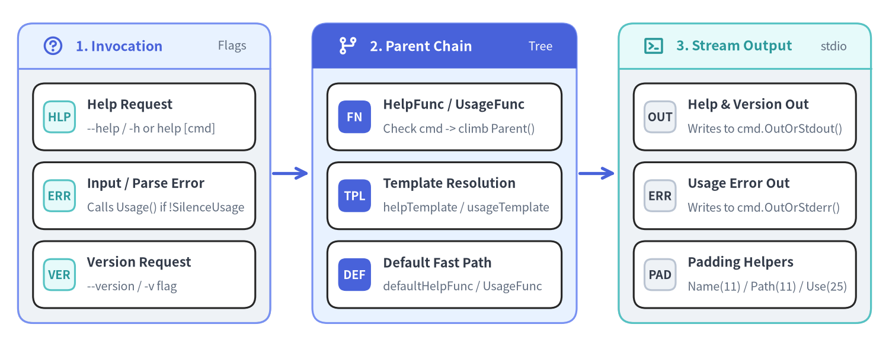
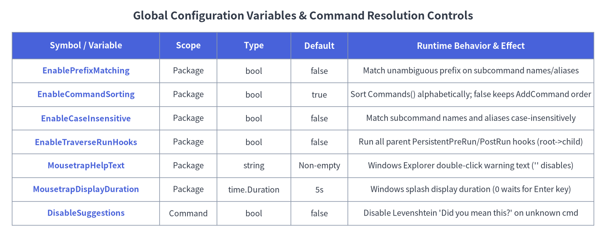

07. Help, Usage, Templates & Global Configuration
Cobra's help, usage, version, typo-suggestion, and global configuration subsystems (command.go and cobra.go) govern how CLI metadata is formatted, inherited across parent-child command trees, and rendered to stdout or stderr. Every template and handler function follows a deterministic bottom-up parent lookup chain, allowing applications to customize formatting globally on the root command or override it on specific subcommands.

Source Code
from drawlib.canvas import save, setup
from drawlib.icons import phosphor
from drawlib.lines import line
from drawlib.smartarts import CardList, Panel
from drawlib.styles import Styles
setup(width=148, height=58, dpi=150)
# 1. Left Panel: Triggers & Flags
p1 = Panel(
"1. Invocation",
"Flags",
style=Styles.Neutral,
header_style=Styles.PrimaryNeutral,
text_style=Styles.PrimaryBold.patch(text_size=11.0),
description_style=Styles.Muted.patch(text_size=9.5),
header_height=7.5,
icon=phosphor.question,
icon_style=Styles.PrimaryBold,
)
p1.draw(xy=(3, 4), width=42, height=50)
ix1, iw1, ih1 = p1.get_content_box(xy=(3, 4), width=42, height=50, padding=(2.5, 2.5))
cl1 = CardList(
style=Styles.White,
text_style=Styles.DarkBold.patch(text_size=10.5),
description_style=Styles.Muted.patch(text_size=9.5),
badge_shape="rounded_rect",
badge_style=Styles.SecondaryNeutral,
badge_text_style=Styles.SecondaryBold.patch(text_size=9.5),
spacing=2.0,
)
cl1.add("Help Request", "--help / -h or help [cmd]", badge_text="HLP")
cl1.add("Input / Parse Error", "Calls Usage() if !SilenceUsage", badge_text="ERR")
cl1.add("Version Request", "--version / -v flag", badge_text="VER")
cl1.draw(xy=ix1, width=iw1, height=ih1)
line((45.5, 29), (51.5, 29), arrow_head="->", style=Styles.PrimaryBold)
# 2. Middle Panel: Parent-Chain Lookup
p2 = Panel(
"2. Parent Chain",
"Tree",
style=Styles.PrimaryNeutral,
header_style=Styles.PrimaryFlat,
text_style=Styles.WhiteBold.patch(text_size=11.0),
description_style=Styles.White.patch(text_size=9.5),
header_height=7.5,
icon=phosphor.git_branch,
icon_style=Styles.WhiteBold,
)
p2.draw(xy=(52, 4), width=44, height=50)
ix2, iw2, ih2 = p2.get_content_box(xy=(52, 4), width=44, height=50, padding=(2.5, 2.5))
cl2 = CardList(
style=Styles.White,
text_style=Styles.DarkBold.patch(text_size=10.5),
description_style=Styles.Muted.patch(text_size=9.5),
badge_shape="rounded_rect",
badge_style=Styles.PrimaryFlat,
badge_text_style=Styles.WhiteBold.patch(text_size=9.5),
spacing=2.0,
)
cl2.add("HelpFunc / UsageFunc", "Check cmd -> climb Parent()", badge_text="FN")
cl2.add("Template Resolution", "helpTemplate / usageTemplate", badge_text="TPL")
cl2.add("Default Fast Path", "defaultHelpFunc / UsageFunc", badge_text="DEF")
cl2.draw(xy=ix2, width=iw2, height=ih2)
line((96.5, 29), (102.5, 29), arrow_head="->", style=Styles.PrimaryBold)
# 3. Right Panel: Output Streams
p3 = Panel(
"3. Stream Output",
"stdio",
style=Styles.Neutral,
header_style=Styles.SecondaryNeutral,
text_style=Styles.SecondaryBold.patch(text_size=11.0),
description_style=Styles.Muted.patch(text_size=9.5),
header_height=7.5,
icon=phosphor.terminal_window,
icon_style=Styles.SecondaryBold,
)
p3.draw(xy=(103, 4), width=42, height=50)
ix3, iw3, ih3 = p3.get_content_box(xy=(103, 4), width=42, height=50, padding=(2.5, 2.5))
cl3 = CardList(
style=Styles.White,
text_style=Styles.DarkBold.patch(text_size=10.5),
description_style=Styles.Muted.patch(text_size=9.5),
badge_shape="rounded_rect",
badge_style=Styles.Neutral,
badge_text_style=Styles.DarkBold.patch(text_size=9.5),
spacing=2.0,
)
cl3.add("Help & Version Out", "Writes to cmd.OutOrStdout()", badge_text="OUT")
cl3.add("Usage Error Out", "Writes to cmd.OutOrStderr()", badge_text="ERR")
cl3.add("Padding Helpers", "Name(11) / Path(11) / Use(25)", badge_text="PAD")
cl3.draw(xy=ix3, width=iw3, height=ih3)
save()
methodHelp Methods (Help, HelpFunc, SetHelp, InitDefaultHelp)#
Defined in command.go, the help methods manage the --help / -h flag, the help [command] subcommand, custom help functions, and text/template overrides.
Go Signatures#
// Help puts out the help for the command. Used when a user calls help [command].
// Can be defined by user by overriding HelpFunc.
func (c *Command) Help() error
// HelpFunc returns either the function set by SetHelpFunc for this command
// or a parent, or it returns a function with default help behavior.
func (c *Command) HelpFunc() func(*Command, []string)
// SetHelpFunc sets help function. Can be defined by Application.
func (c *Command) SetHelpFunc(f func(*Command, []string))
// SetHelpCommand sets help command.
func (c *Command) SetHelpCommand(cmd *Command)
// SetHelpCommandGroupID sets the group id of the help command.
func (c *Command) SetHelpCommandGroupID(groupID string)
// SetHelpTemplate sets help template to be used. Application can use it to set custom template.
func (c *Command) SetHelpTemplate(s string)
// HelpTemplate return help template for the command.
func (c *Command) HelpTemplate() string
// InitDefaultHelpCmd adds default help command to c.
// If c already has help command or c has no subcommands, it will do nothing.
func (c *Command) InitDefaultHelpCmd()
// InitDefaultHelpFlag adds default help flag to c.
// If c already has help flag, it will do nothing.
func (c *Command) InitDefaultHelpFlag()
Help Resolution & Output Behavior#
- Stream Destination (
OutOrStdout): UnlikeUsage(), which writes toOutOrStderr(), the defaultHelpFunc()writes toc.OutOrStdout()(so piping<prog> --help | lessworks naturally). - Parent-Chain Inheritance:
c.HelpFunc()checksc.helpFunc; ifnil, it climbsc.Parent().HelpFunc().- When the default
HelpFuncruns, it callsc.getHelpTemplateFunc(), which checksc.helpTemplateupward throughc.parent. If no custom template was set anywhere in the ancestry, Cobra calls the compiled Go fast-pathdefaultHelpFunc(which printsc.Long—orc.ShortifLongis empty—followed byc.UsageString()).
InitDefaultHelpCmd(): Automatically invoked on the root command insideExecuteC(),GenMarkdownCustom(),GenMan(),GenReSTCustom(), andGenYamlCustom(). Only creates thehelp [command]subcommand ifc.HasSubCommands()istrueandc.helpCommand == nil. Also wires a built-inValidArgsFunctiononhelpso<prog> help <TAB>completes available subcommand names with descriptions.InitDefaultHelpFlag(): Lazily merges persistent flags and registers-h, --help(bool, annotated withFlagSetByCobraAnnotation) if"help"is not already defined onc.Flags().
methodUsage, Version & Padding Methods#
While Help() displays the full command description (Long) plus usage, Usage() displays the concise synopsis, subcommand list, and flag sections (invoked both inside Help() and when a command fails with SilenceUsage == false).
Go Signatures#
// Usage puts out the usage for the command. Used when a user provides invalid input.
// Can be defined by user by overriding UsageFunc.
func (c *Command) Usage() error
// UsageFunc returns either the function set by SetUsageFunc for this command
// or a parent, or it returns a default usage function.
func (c *Command) UsageFunc() (f func(*Command) error)
// SetUsageFunc sets usage function. Usage can be defined by application.
func (c *Command) SetUsageFunc(f func(*Command) error)
// UsageString returns usage string.
func (c *Command) UsageString() string
// SetUsageTemplate sets usage template. Can be defined by Application.
func (c *Command) SetUsageTemplate(s string)
// UsageTemplate returns usage template for the command.
func (c *Command) UsageTemplate() string
// SetVersionTemplate sets version template to be used. Application can use it to set custom template.
func (c *Command) SetVersionTemplate(s string)
// VersionTemplate return version template for the command.
func (c *Command) VersionTemplate() string
// InitDefaultVersionFlag adds default version flag to c if c.Version is non-empty.
func (c *Command) InitDefaultVersionFlag()
// Padding calculation methods used by Usage/Help templates
func (c *Command) NamePadding() int
func (c *Command) CommandPathPadding() int
func (c *Command) UsagePadding() int
Method & Padding Specification#
| Method | Return Type | Minimum Floor | Description |
|---|---|---|---|
Usage() |
error |
— | Invokes c.UsageFunc()(c), which merges persistent flags and writes the rendered usage template to c.OutOrStderr(). |
UsageString() |
string |
— | Temporarily redirects c.outWriter and c.errWriter to an in-memory bytes.Buffer, calls c.Usage(), restores the writers, and returns the formatted string. |
InitDefaultVersionFlag() |
void |
— | No-op if c.Version == "". Otherwise adds --version (with -v shorthand if -v is unused on c.Flags()) annotated with FlagSetByCobraAnnotation. |
NamePadding() |
int |
11 (minNamePadding) |
Returns max(11, c.parent.commandsMaxNameLen). Used by {{rpad .Name .NamePadding}} to align subcommand columns under Available Commands:. |
CommandPathPadding() |
int |
11 (minCommandPathPadding) |
Returns max(11, c.parent.commandsMaxCommandPathLen). Used to align Additional help topics:. |
UsagePadding() |
int |
25 (minUsagePadding) |
Returns max(25, c.parent.commandsMaxUseLen). Available in custom usage templates for full Use string column alignment. |
funcTemplate Functions (AddTemplateFunc, AddTemplateFuncs, Gt, Eq)#
Defined in cobra.go, Cobra maintains a package-level templateFuncs map (template.FuncMap) injected into every custom UsageTemplate, HelpTemplate, and VersionTemplate.
Go Signatures#
// AddTemplateFunc adds a template function that's available to Usage and Help template generation.
func AddTemplateFunc(name string, tmplFunc interface{})
// AddTemplateFuncs adds multiple template functions that are available to Usage and Help template generation.
func AddTemplateFuncs(tmplFuncs template.FuncMap)
// Gt takes two types and checks whether the first type is greater than the second.
// In case of types Arrays, Chans, Maps and Slices, Gt will compare their lengths.
// Ints are compared directly while strings are first parsed as ints and then compared.
func Gt(a interface{}, b interface{}) bool
// Eq takes two types and checks whether they are equal.
// Supported types are int and string. Unsupported types will panic.
func Eq(a interface{}, b interface{}) bool
Built-In Template Function Registry (cobra.go)#
| Template Function Key | Bound Implementation | Behavior in Templates |
|---|---|---|
"trim" |
strings.TrimSpace |
Strips leading and trailing whitespace. |
"trimRightSpace" |
trimRightSpace |
Strips trailing Unicode whitespace (unicode.IsSpace). |
"trimTrailingWhitespaces" |
trimRightSpace |
Alias for trimRightSpace (used in defaultUsageTemplate on .LocalFlags.FlagUsages). |
"appendIfNotPresent" |
appendIfNotPresent |
Appends stringToAppend with a space only if not already a substring. |
"rpad" |
rpad(s string, padding int) string |
Right-pads s with spaces to padding width (fmt.Sprintf("%%-%ds", padding)). |
"gt" |
cobra.Gt |
Compares lengths of slices/maps/arrays/chans, or numeric values of ints/strings. |
"eq" |
cobra.Eq |
Checks equality of int* or string values (panics on slices/maps). |
methodSuggestions, Flag Error Handling & FParseErrWhitelist#
When a user mistypes a subcommand name or passes an unknown flag, Cobra provides Levenshtein distance typo suggestions and configurable flag parse error interception (command.go and cobra.go).
Go Signatures & Structs#
// FParseErrWhitelist configures Flag parse errors to be ignored
type FParseErrWhitelist flag.ParseErrorsAllowlist
// (where pflag.ParseErrorsAllowlist is struct { UnknownFlags bool })
// SuggestionsFor provides suggestions for the typedName.
func (c *Command) SuggestionsFor(typedName string) []string
// SetFlagErrorFunc sets a function to generate an error when flag parsing fails.
func (c *Command) SetFlagErrorFunc(f func(*Command, error) error)
// FlagErrorFunc returns either the function set by SetFlagErrorFunc for this
// command or a parent, or it returns a function which returns the original error.
func (c *Command) FlagErrorFunc() (f func(*Command, error) error)
// SetErrPrefix sets error message prefix to be used. Application can use it to set custom prefix.
func (c *Command) SetErrPrefix(s string)
// ErrPrefix return error message prefix for the command (defaults to "Error:").
func (c *Command) ErrPrefix() string
Typo Suggestion Algorithm (SuggestionsFor)#
When Find encounters an unknown subcommand and c.DisableSuggestions is false:
- If
c.SuggestionsMinimumDistance <= 0, Cobra initializes it to2. c.SuggestionsFor(typedName)iterates over all child commands wherecmd.IsAvailableCommand()istrueand includescmd.Name()if any of the following hold:- The case-insensitive Levenshtein distance
ld(typedName, cmd.Name(), true) <= c.SuggestionsMinimumDistance. cmd.Name()hastypedNameas a case-insensitive prefix (strings.HasPrefix).- Any entry in
cmd.SuggestFormatchestypedNamecase-insensitively (strings.EqualFold).
- The case-insensitive Levenshtein distance
Ignoring Unknown Flags (FParseErrWhitelist)#
Setting cmd.FParseErrWhitelist.UnknownFlags = true copies the allowlist into cmd.Flags().ParseErrorsAllowlist right before cmd.Flags().Parse(args) inside ParseFlags, allowing wrapper commands to parse known flags while ignoring unrecognized flags meant for downstream processes.
configPackage-Level Configuration Variables (cobra.go)#
cobra.go exports six package-level variables that modify command resolution, sorting, lifecycle hook traversal, and Windows Explorer launch behavior across the entire process.

Source Code
from drawlib.canvas import save, setup
from drawlib.smartarts import Table
from drawlib.styles import Colors, Styles
from drawlib.text import text
setup(width=148, height=58, dpi=150)
text(
(74, 54),
"Global Configuration Variables & Command Resolution Controls",
style=Styles.DarkBold.patch(text_size=13.0),
)
tbl = Table(
cell_style=Styles.White,
text_style=Styles.Dark.patch(text_size=10.0),
header_cell_style=Styles.PrimaryFlat,
header_text_style=Styles.WhiteBold.patch(text_size=10.5),
border_style=Styles.MutedThin,
)
rows = [
["Symbol / Variable", "Scope", "Type", "Default", "Runtime Behavior & Effect"],
["EnablePrefixMatching", "Package", "bool", "false", "Match unambiguous prefix on subcommand names/aliases"],
["EnableCommandSorting", "Package", "bool", "true", "Sort Commands() alphabetically; false keeps AddCommand order"],
["EnableCaseInsensitive", "Package", "bool", "false", "Match subcommand names and aliases case-insensitively"],
["EnableTraverseRunHooks", "Package", "bool", "false", "Run all parent PersistentPreRun/PostRun hooks (root->child)"],
["MousetrapHelpText", "Package", "string", "Non-empty", "Windows Explorer double-click warning text ('' disables)"],
["MousetrapDisplayDuration", "Package", "time.Duration", "5s", "Windows splash display duration (0 waits for Enter key)"],
["DisableSuggestions", "Command", "bool", "false", "Disable Levenshtein 'Did you mean this?' on unknown cmd"],
]
tbl.set_style_cell_evenodd(
even_color=Colors.Light,
even_text_style=Styles.Dark.patch(text_size=9.5),
odd_color=Colors.White,
odd_text_style=Styles.Dark.patch(text_size=9.5),
)
tbl.set_style_cell_header(
background_color=Colors.Primary,
text_style=Styles.WhiteBold.patch(text_size=10.0),
)
tbl.set_style_cell(
background_color=Colors.Light,
text_style=Styles.PrimaryBold.patch(text_size=9.5),
rows=[1, 2, 3, 4, 5, 6, 7],
columns=[0],
)
tbl.draw_flexible(
xy=(3, 50),
column_widths=[36, 14, 18, 14, 60],
row_heights=[6.5, 5.8, 5.8, 5.8, 5.8, 5.8, 5.8, 5.8],
data=rows,
align="top_left",
)
save()
Go Declarations (cobra.go)#
// EnablePrefixMatching allows setting automatic prefix matching.
var EnablePrefixMatching = false
// EnableCommandSorting controls sorting of the slice of commands, which is turned on by default.
// To disable sorting, set it to false.
var EnableCommandSorting = true
// EnableCaseInsensitive allows case-insensitive commands names. (case sensitive by default)
var EnableCaseInsensitive = false
// EnableTraverseRunHooks executes persistent pre-run and post-run hooks from all parents.
// By default this is disabled, which means only the first run hook to be found is executed.
var EnableTraverseRunHooks = false
// MousetrapHelpText enables an information splash screen on Windows
// if the CLI is started from explorer.exe. To disable, set to "".
var MousetrapHelpText = `This is a command line tool.
You need to open cmd.exe and run it from there.
`
// MousetrapDisplayDuration controls how long the MousetrapHelpText message is displayed on Windows
// if the CLI is started from explorer.exe. Set to 0 to wait for the return key to be pressed.
var MousetrapDisplayDuration = 5 * time.Second
Detailed Configuration Notes#
EnablePrefixMatching: Whentrue,findNext()falls back to prefix matching across command names and aliases if no exact match is found. The prefix is accepted only if it matches exactly 1 subcommand (len(matches) == 1); ambiguous prefixes returnnil.EnableCommandSorting: Controlsc.Commands(). Whentrue(default), child commands are sorted lexicographically byName(). Setcobra.EnableCommandSorting = falsebefore callingExecute()to preserve the exact registration order passed toAddCommand().EnableCaseInsensitive: MakescommandNameMatches(s, t)usestrings.EqualFold(s, t)for both command names and command aliases.EnableTraverseRunHooks: Changes persistent hook inheritance duringexecute():- When
false(default): Cobra walks upward fromcmdtoRoot()and executes only the firstPersistentPreRun[E](and firstPersistentPostRun[E]) it finds. - When
true: Cobra executes allPersistentPreRun[E]hooks in top-down order (Root-> parent ->cmd) and allPersistentPostRun[E]hooks in bottom-up order (cmd-> parent ->Root).
- When
MousetrapHelpText&MousetrapDisplayDuration: Active only on Windows (command_win.go) viagithub.com/inconshreveable/mousetrap. If a user double-clicks the binary inexplorer.exe, Cobra printsMousetrapHelpTextand sleeps forMousetrapDisplayDuration(or waits forEnterif<= 0). Setcobra.MousetrapHelpText = ""to disable.
Cross-References#
- 01. Command Struct & Configuration Fields —
Commandstruct fields includingSilenceErrors,SilenceUsage,Version, andSuggestFor. - 02. Execution Engine & Lifecycle Hooks —
ExecuteC,PersistentPreRunE, and howEnableTraverseRunHooksalters hook execution order. - 08. Documentation Generation (
cobra/doc) — Generating static documentation from command metadata.